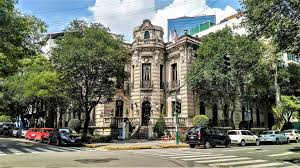
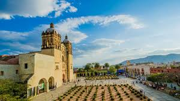
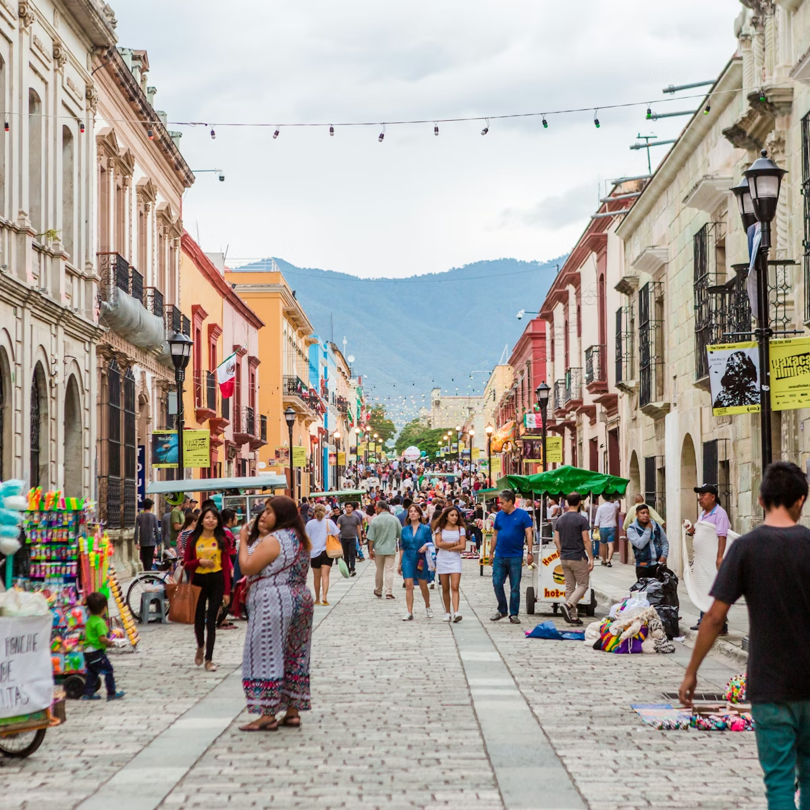
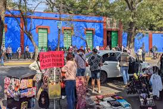
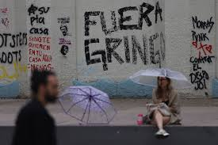
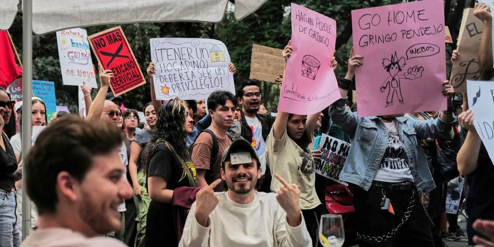
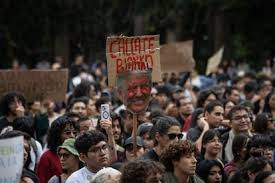
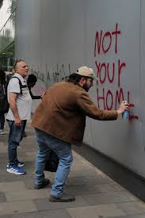
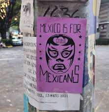
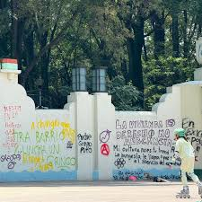

How global media, tourism, and remote work are reshaping Mexican neighborhoods like Roma–Condesa,
Coyoacán and Oaxaca City – creating new opportunities, but also displacement and inequality.
This project explores how gentrification in Mexico is shaped by globalization, especially
through global media, tourism and digital platforms like Airbnb. Neighborhoods such as Roma–Condesa,
Coyoacán and Oaxaca City are turned into global lifestyle brands.
The main argument is that gentrification is not only about foreigners moving in. It is driven by
economic systems, housing policies and global media that privilege people with higher buying
power, often at the expense of long-term residents.
Global media & city branding
Tourism & digital nomads
Rents, Airbnb & displacement
Protest, xenophobia & social justice
Global Media & Urban Desire
Articles and short-form media frame Mexico City and Oaxaca as creative, colorful and “Instagrammable”
destinations. These images amplify desirability and can accelerate rent pressure, tourism and neighborhood
change.
How TikTok & Instagram Shape Urban Desire
Short-form video and curated photo tours amplify images of neighborhoods — emphasizing cafés, murals
and “authentic” moments. These images increase desirability and can accelerate rent pressure and
tourism-driven change.
Local video using my own footage to show how these spaces look and feel beyond tourist images.
Media Mechanisms
“Best neighborhood” lists and lifestyle city guides that rebrand places.
Influencers promoting cafés, rooftops, murals and “hidden gems.”
Hashtags that turn streets into Instagram landmarks.
On the Ground
More short-term rentals and boutique hotels.
Shift from local markets to tourist-oriented businesses.
New class and language boundaries (English menus, dollar prices).
Glocalization
Drawing on Kraidy’s idea of glocalization, this project sees these neighborhoods as hybrid
spaces where global and local cultures mix. Global tastes adapt to Mexican aesthetics, and local culture is
reshaped for global audiences.
Global cafés use Mexican tiles, colors and Indigenous textiles.
Local food, art and traditions are branded for tourists and digital nomads.
Hybridity happens in an unequal system: people with dollars have more power over the mix.
Glocalization helps explain why culture becomes both a product and a
justification for rising prices in Roma–Condesa, Coyoacán and Oaxaca City.
Case Studies
Roma–Condesa, Mexico City
Historic elite neighborhood that later became more middle class.
After rent controls ended, investors renovated buildings and raised prices.
Remote workers and Airbnb increased demand, displacing long-term tenants.
Oaxaca City
Global tourism hotspot built around Indigenous culture and gastronomy.
Boutique hotels and upscale restaurants replace family homes and markets.
Local communities see rising taxes and rents without equal benefits.
Coyoacán, Mexico City
Marketed globally through Frida Kahlo, art and “bohemian” branding.
Traditional shops struggle with higher rents and tourist-focused businesses.
IRReview describes this as growth at the expense of cultural erasure.
Media vs Reality: Roma, Coyoacán and Oaxaca
Global media and tourism platforms often show Mexican neighborhoods as colorful, safe and “Instagrammable.”
This gallery contrasts those idealized images with more grounded views of local life, housing and everyday
streets in Roma–Condesa, Coyoacán and Oaxaca City. Together, they show how gentrification is not only about
architecture and design, but also about who each space is made for.
Roma–Condesa — Media view: A polished, renovated street frequently used in global media
to represent the neighborhood as a lifestyle destination for tourists and digital nomads. The emphasis is
on design, brunch culture and curated aesthetics.

Roma–Condesa — Local reality: A more ordinary version of the neighborhood before intense
foreign demand. Older buildings, local tenants and everyday street activity dominated the area before
rising rents and tourist-oriented businesses reshaped the space.

Oaxaca City — Media view: Oaxaca is marketed worldwide as a colorful, walkable cultural
paradise. Travel content highlights gastronomy, heritage and picturesque streets, making the city appear
fully oriented toward tourism rather than local life.

Oaxaca City — Local reality: Behind the tourist images are the everyday struggles of
residents facing rising living costs, informal labor, and pressure from real estate speculation. The
streets shown as “authentic experiences” online are workplaces and transit routes for local families.
Coyoacán — Media view: Social media frames Coyoacán as a calm, bohemian space connected
to Frida Kahlo and artistic culture. The images highlight plazas, cafés and boutique experiences designed
to appeal to global visitors.

Coyoacán — Local reality: In reality, Coyoacán is crowded, saturated with tourism and
increasingly expensive for longtime residents. The influx of visitors reshapes who can afford to live,
work and remain in the area, contributing to displacement pressures.
Official Data & Graphs
These charts use simplified indexes based on official statistics from the Mexican government to show how
globalization and tourism pressures relate to housing costs and the cost of living.
Sources: Índice SHF de Precios de la Vivienda (Sociedad Hipotecaria Federal),
INEGI/INPC (Consumer Price Index), and SECTUR/Datatur statistics on international visitors.
Housing Price Index – Mexico (2015–2024, SHF – normalized)
Approximate index for the national housing market, based on the SHF Housing Price Index (2015 = 100).
Values are rescaled and rounded for visualization.
100
115
130
145
158
172
International Tourists Visiting Mexico (millions)
International visitors to Mexico (millions of people), based on INEGI and SECTUR/Datatur statistics.
Values are approximate and rounded.
32.1
35.0
44.7
24.3
38.3
45.0
Consumer Price Index (INPC) – General (2010 = 100)
Approximate evolution of Mexico's general Consumer Price Index, using INEGI/INPC data (2010 = 100).
Values are simplified for clarity.
100
120
135
150
170
Food Price Index – Mexico (2015–2024, normalized)
Normalized index of food prices (2015 = 100), based on INEGI and food CPI series. Values are rescaled and
rounded to show the trend.
100
112
120
130
140
145
Protest, Xenophobia & Social Justice
In recent years, protests in neighborhoods like Roma–Condesa and central Mexico City have used strong slogans
such as “Fuera gringos” to express anger about rising rents, evictions and the feeling of losing the barrio.
These protests are a reaction to real inequality and displacement, but the way they frame the problem can move
in two very different directions: xenophobia or social justice.
When it becomes xenophobia
Language, accent or skin color are treated as the problem.
Violence or harassment is justified “because they are not from here.”
The focus moves away from landlords, investors and housing policy.
When it becomes social justice
The problem is defined as housing inequality and speculation.
Demands target governments, real estate funds and platforms like Airbnb.
Foreign residents are invited to join as allies instead of being blamed.
The goal is to defend the right to stay for long-term residents.
From a globalization and media perspective, these protests show how frustration caused by global capital and
tourism can either be translated into hate against outsiders or transformed into organized movements for housing
justice. The same digital platforms that promote these neighborhoods (Instagram, TikTok, Airbnb) are also used
by activists to document evictions, call for marches and make their demands visible.
Visual Gallery: Protest, Xenophobia & Justice
This mini-gallery shows different ways in which anger and resistance appear in the streets and on social media:
from hostile messages against foreigners to collective demands for housing rights and community care.

Marches against rent hikes, evictions and Airbnb-driven displacement in central neighborhoods.

Some messages place all the blame on foreigners, turning a structural housing problem into a xenophobic
dispute.

Street art documents community resistance and links anti-gentrification struggles with broader fights over
race, class and belonging.

Neighborhood assemblies push for rent control, limits on short-term rentals and protections for long-term
tenants.

Digital activism and street protest work together: hashtags, livestreams and megaphones amplify housing
justice claims.

Collective spaces where residents, activists and some newcomers share experiences and build alliances for
housing justice rather than division.
Possible Solutions & Local Resistance
Articles and course readings suggest that real solutions must focus on housing justice, not
just blaming individuals.
Policy Ideas
Rent caps and public registration of rental contracts.
Limits on the number of Airbnbs and days they can be rented.
Affordable housing projects in and beyond the city center.
Better public services in peripheral areas to reduce pressure on central neighborhoods.
Community & Digital Activism
Neighborhood assemblies and campaigns against unfair evictions.
Use of social media to document displacement and mobilize support.
Coalitions between long-term residents and sympathetic immigrants.
Framing gentrification as a class and housing issue, not a war on migrants.
Sources (selected)
BBC News. (2024). Article on tourism and gentrification in Mexico.
AP News. (2024). Mass tourism and gentrification in Mexico.
IRReview. (2024).
The gentrification of Mexico City: Economic growth at the expense of local displacement and
erasure of culture.
Vox. (2022). Mexico City, the pandemic, remote work and gentrification.
Mexico News Daily. (2023). A short history of immigration in Roma and Condesa.
Palabra Nahj. (2024). The battle against gentrification in Mexico City: Xenophobia or social justice?
Shahin, S. (2017). Facing up to Facebook: Digital activism and mass media.
Rane, H., & Salem, S. (2012). Social media, social movements and the diffusion of ideas.
Kraidy, M. (Glocalization reading). Hybridity, global media and culture.